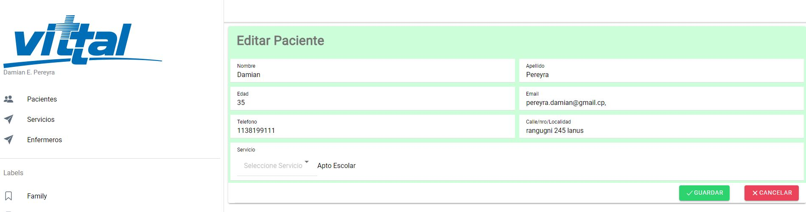

Portafolio
Desarrollo de una billetera virtual
Este es un proyecto de una desarrollado en Java Spring Boot. Proporciona una plataforma para administrar cuentas y realizar transacciones en diferentes monedas.
Ver proyectoDesarrollo de un ABM de servicios de emergencias.
Vittal Manager es una aplicación web para la gestión de servicios de enfermería.
Ver proyecto